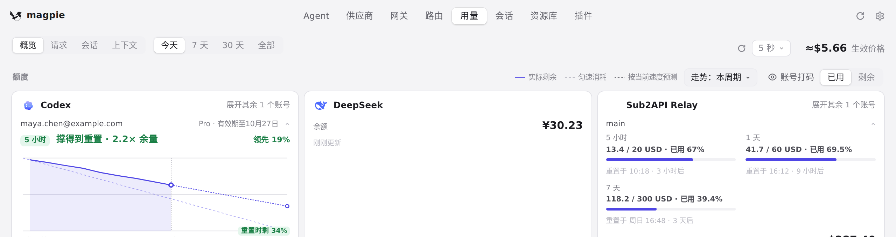
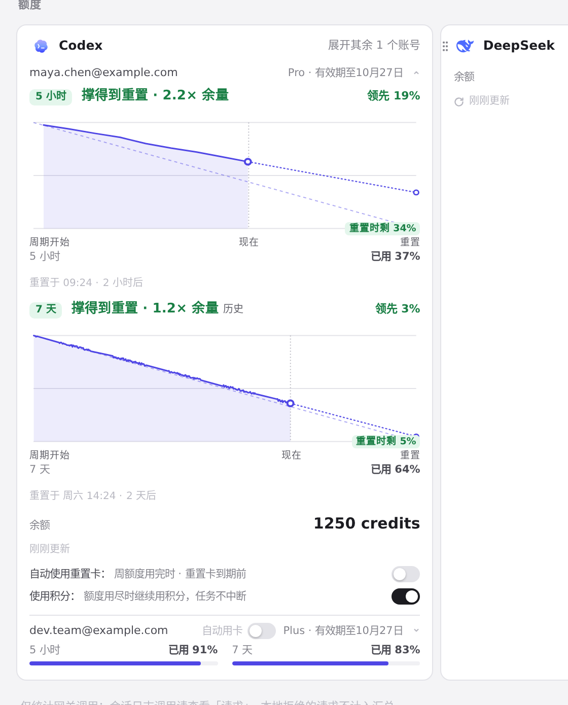
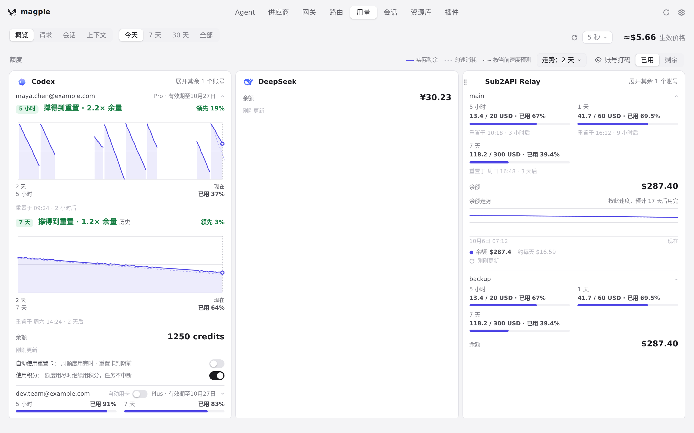
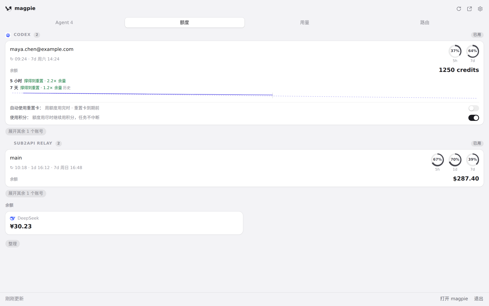

#977 界面预览
commit 5fe3470 · 回到 PR · 该 diff 给用量页和托盘面板的每个额度窗口加了预测：窗口上方一行结论（撑得到重置 · 余量倍数、多久后用完、已用完）与领先/落后对比，配一张该窗口自己的走势图（实际剩余、匀速消耗、按当前速度预测），图例从每张卡片移到「额度」标题栏统一显示，托盘卡片上则是一行一窗口的紧凑结论。
红线是鼠标走过的轨迹，红色圆环是一次点击；底部文字是这一步在做什么。空格暂停，← → 逐段查看。

用量页：每个额度窗口的预测 · 「额度」标题栏：新增的统一图例和走势范围选择

用量页：每个额度窗口的预测 · Codex 卡片：每个额度窗口上方的预测结论与下方的走势图

用量页：每个额度窗口的预测 · 切成 2 天后：走势图重画，窗口上方的预测结论仍在该处

托盘面板的额度预测行 · 额度卡片上每个窗口一行的预测结论